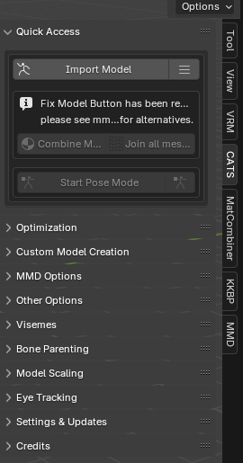

Introduction
This guide will help you learn the basics of converting MMD models (.pmx) into VRM models.
What You Need
-
Blender
Steam Download
Once installed, go to properties and select the v4.2 - Stable - LTS Beta.
Blender Releases Index
Download and install the 4.2.5 MSI file. -
Unofficial Cats Blender Plugin
GitHub Download
Follow the instructions on the page to download and install the plugin in Blender. -
MMDTools
Blender.org Download
Download and install as a plugin for Blender. -
Material Combiner Addon
GitHub Download
Download and install as a plugin for Blender. -
Unity
Unity Hub Download
Open Unity Hub, go to installs, click install editor, and install the Unity 2022.3.55f1 editor. -
UniVRM
GitHub Download
Download the latest 0.x Import/Export unitypackage. Once you've created a Unity project, drag and drop the unitypackage into the project to install the plugin.
Reminder: Make sure to save your progress to avoid losing it. :D
Conversion Process
1. Open Blender
Make sure to delete the default cube! It's the most important step. :P

2. Import MMD Model
Select CATS on the toolbar, then click "Import Model" and select the model you want to import.
3. Verify Textures
Check if the textures imported correctly by changing the render mode to view the textures. Give some time for shaders to compile, as it can take a while depending on the model and your PC specs.
If everything looks good, press the "Fix MMD Model" button found under the MMD Options section of Cats Blender Plugin.

4. Generate Texture Atlas
Generate a material list by navigating to the Optimizations section of Cats Blender Plugin and clicking on "Generate Material List."

Select the files you want to use to generate the atlas. Note that some models may not work well with atlases, requiring you to troubleshoot by deselecting certain materials.

Once ready, click on "Save Atlas To..." and save it in a designated folder.
5. Export Model
If the texture atlas was generated correctly and the model's visuals are satisfactory, proceed to export the model by navigating to "Quick Access" in Cats Blender Plugin and clicking "Export."


You can ignore any warnings and continue to export the `.fbx` file. It's recommended to save it in the same folder as the texture atlas.
6. Unity Setup
Open Unity Hub and create a new project using the appropriate template.
Once the project is created and opened, drag the UniVRM unitypackage file into the Unity project to install the plugin. You should see two new tabs on the top bar.

7. Organize Project Assets
Create folders within the `Assets` directory to organize files by type and model name. For example:
Assets > [File Type] > [Model Name] > Materials and Textures

This helps keep the project organized, especially when converting multiple models.
8. Import Assets into Unity
Drag the exported `.fbx` file and the texture atlas (or individual textures if atlas generation failed) into the corresponding model folder. Create materials by right-clicking inside the character folder, selecting Create > Material, and configuring them accordingly.

Rename the material appropriately, change the shader type to VRM/MToon, and set the rendering mode to Cutout.

Drag the texture atlas onto the material's texture slots and apply the material to the `.fbx` file.


Finally, drag the `.fbx` file into the hierarchy to view the model in the scene.
9. Configure Rigging
Select the `.fbx` file, go to the Rig tab, select Humanoid as the animation type, and apply the changes.

Click on Configure, unlock the window if necessary, and adjust the jaw bone settings. Apply the changes once configured.

10. Export VRM Model
After configuring Spring Bones, colliders, and blendshapes, export the finished `.vrm` model by selecting the model in the hierarchy and clicking on Export VRM.
Save the VRM inside the Unity project or drag and drop it from the file explorer into the project.
Once imported, organize the `.Prefab` file and apply the necessary configurations.
Additional Resources
Here are some helpful video tutorials to assist you further:
- HOW TO CONVERT FBX FROM BLENDER TO VRM - Starts at 5:22 and covers how to add Spring Bones and configure Blendshapes. Earlier parts also cover Unity setup.
- ASK LIZZY - HOW TO PUT COLLIDERS TO A VRM AND SPRING BONES - Covers how to set up Spring Bones and colliders.
Conclusion
Thank you for reading this guide! I hope it helps you in converting any MMD models you like. Most models should work with this method; however, some models have unconventional file structures for textures, resulting in incorrectly generated atlases. In such cases, you may need to manually apply textures to numerous materials in Unity using the original MMD model textures instead of a single material with a texture atlas.